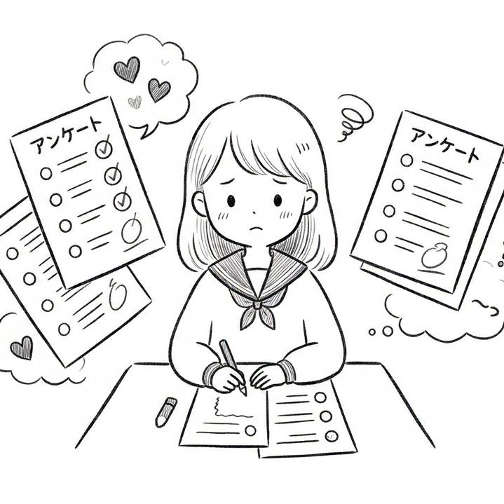
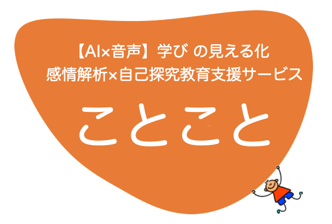
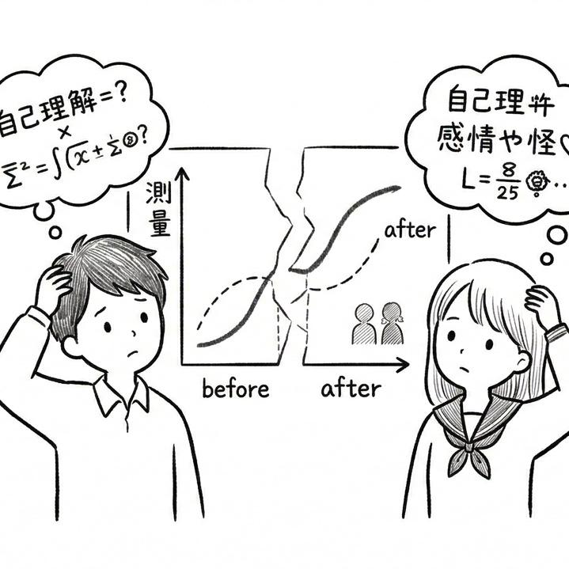
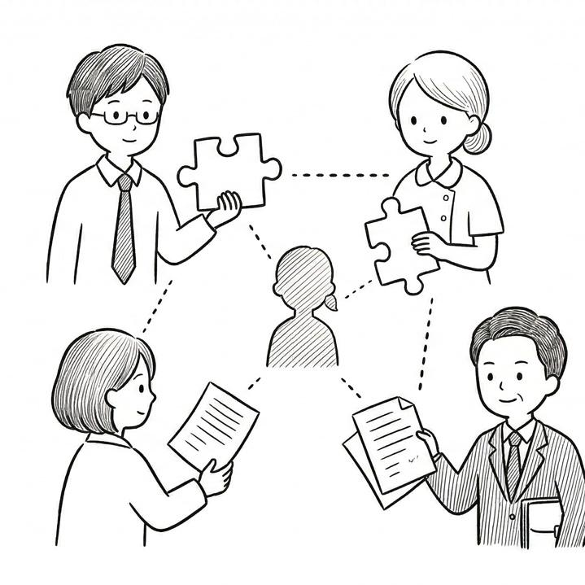
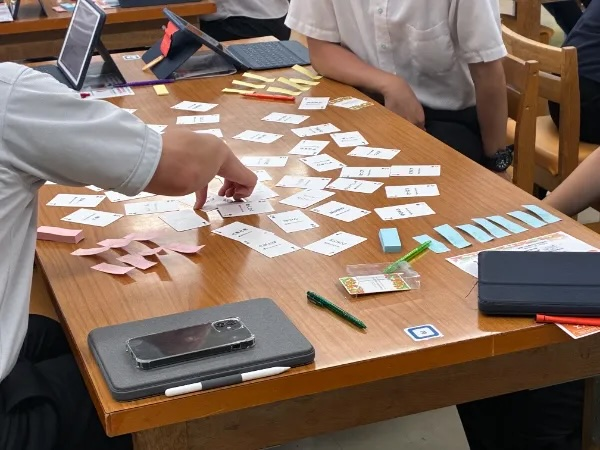
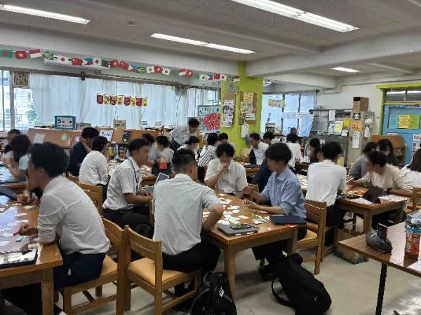
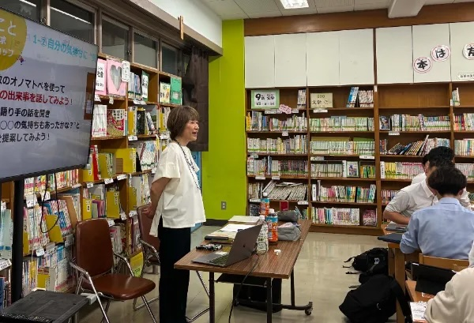

アンケートの健康観察では不安
数値や選択式の結果だけでは、生徒の本音や小さな変化をつかみきれず、早期支援につながりにくい。


数値や選択式の結果だけでは、生徒の本音や小さな変化をつかみきれず、早期支援につながりにくい。

探究活動の前後で、自己理解や感情の変化をどのように把握・可視化すればよいか悩むことがある。

担任・学年・養護教諭・管理職で情報が分散し、支援方針の共有や連携が属人的になりやすい。
生徒の発する声から、感情や元気度を測定することで、自己理解の促進と日々の見守り・支援につなげます。
生徒の発話から感情傾向と元気度を継続的に把握し、気になる変化を早めに捉えることができます。
授業前後の感情・自己認識の変化を記録し、探究のプロセスが生徒に与えた影響を見える化します。
学級担任・学年・養護教諭などで情報共有しやすい形式で整理し、連携した支援につなげられます。
point
生徒・教員・支援者が対話を通して相互理解を深める、
実践型の学びを支援します
学校種・立場を横断して実施できる対話型研修
ことことオリジナル感情カードを活用
場の空気がやわらぎ、対話が活性化
自己理解と他者理解の深化
こんな楽しそうに会話が弾み、先生方の表情にも変化が起きる研修は初めてです。
研修主催教員
Y先生
対話って本当に大切だなと改めて実感しました。場の変化にとても驚きました。
参加教員
先生方の声
感情をカードと言葉で共有することで、互いの理解が深まり、安心して話せる場になりました。
ワークショップ参加者
先生方より



世界50カ国・4,300以上の開発チームで利用されている、実績ある感情解析AIを活用しています。教育用途に合わせて表示内容を調整し、分かりやすく提示します。
一般的な学校ネットワーク環境での利用を想定しています。
スマートフォン、タブレット、PCのいずれでも利用可能です。学校の端末環境に合わせて運用できます。